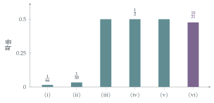

STEP I 2007, 문제 13
계속 읽기 전에 문제를 먼저 읽어 보자. 문제는 STEP Support Programme의 문제 데이터베이스에 있다: step.maths.org/questions/07-s1-q13
도입
확률(probability)에서 가장 위험한 말은 “ 라는 조건에서”이다. 이 문제의 마지막 네 소문항은 거의 똑같이 들린다. 3번 원판이 처음에 뽑힌다, 3번 원판이 뽑힌다, 번호가 적힌 원판이 처음에 뽑힌다, 번호가 적힌 원판이 뽑힌다. 이 가운데 셋은 답이 \(\frac12\)이다. 나머지 하나는 그렇지 않다.
이 차이는 유명한 “아들 딸” 퍼즐(어느 가족에 아이가 둘 있고, 적어도 한 명은 아들이다. 둘 다 아들일 확률은 얼마인가?)에 숨어 있는 바로 그 차이이다. 이 퍼즐은 여러 세대의 학생들은 물론이고 적지 않은 전문 수학자들까지 헷갈리게 했다. 여기서 얻을 교훈은, 조건(condition)이란 어떤 결과들이 여전히 가능한지에 대한 정확한 진술이며, 정보를 어떻게 얻었는지가 정보 그 자체만큼이나 중요하다는 것이다.
시작하기 전에
원판 열한 개 가운데 네 개를 뽑는다. “네 개 모두 번호가 적혀 있다”는 사건에 뽑는 순서가 중요한가? 똑같이 가능한 네 원판의 집합은 몇 개인가?
네 원판으로 이루어진 모든 집합은 뽑힐 가능성이 똑같으므로 순서는 무시해도 된다. 똑같이 가능한 집합은 \(\binom{11}{4} = 330\)개이다.
차근차근 풀기
단계 1 조건이 없을 때
번호가 적힌 원판 네 개로 이루어진 집합은 \(\binom54 = 5\)개이므로 \[\mathrm{P}(\text{네 개 모두 번호가 적혀 있음}) = \frac{5}{330} = \frac{1}{66}.\]
단계 2 3이 처음에 나올 때
3번 원판이 처음에 뽑혔다면, 나머지 세 번의 뽑기는 어떻게 되는가?
나머지 세 원판은 남은 열 개(번호가 적힌 것 네 개, 빈 것 여섯 개)에서 무작위로 고른 세 개의 집합이고, \(\binom{10}{3} = 120\)개의 집합이 모두 똑같이 가능하다. 따라서 \[\text{(ii)}\quad \frac{\binom43}{120} = \frac{4}{120} = \frac{1}{30}, \qquad \text{(iii)}\quad \frac{\binom41\binom62}{120} = \frac{4 \times 15}{120} = \frac12,\] 이다. (iii)에서는 나머지 세 개 가운데 정확히 하나에 번호가 적혀 있어야 하기 때문이다.
단계 3 3이 (어느 시점에) 뽑힐 때
3번 원판이 언제 뽑혔는지가 중요한가? 네 개 가운데 3이 들어 있다는 조건에서, 나머지 세 개에 대해 무엇을 말할 수 있는가?
대칭성(symmetry)에 의해, 네 원판의 집합이 3을 포함한다는 조건에서 나머지 세 원판은 2단계와 똑같이 남은 열 개에서 무작위로 고른 세 개의 집합이다. 따라서 (iv)도 \(\frac12\)이다.
단계 4 번호가 적힌 원판이 처음에 나올 때
첫 번째 원판에 번호가 적혀 있다는 조건에서(그 번호가 무엇이든), 나머지 세 개는 역시 남은 열 개의 원판에서 무작위로 고른 세 개의 집합이며, 그 열 개 가운데 네 개는 번호가 적혀 있고 여섯 개는 비어 있다. 따라서 (v)도 \(\frac12\)이다.
단계 5 번호가 적힌 원판이 뽑힐 때
이제 조건은 “네 개 가운데 적어도 하나에 번호가 적혀 있다”이다. 이것은 앞의 조건들 가운데 어느 하나와 같은가? 330개의 집합 가운데 몇 개가 이 조건을 만족하는가?
이 조건은 다르다. 특정한 원판 하나를 지목하지 않기 때문이다. 번호가 적힌 원판이 하나도 없는 집합은 \(\binom64 = 15\)개뿐이므로, \(315\)개가 조건을 만족한다. 이 가운데 번호가 적힌 원판을 정확히 두 개 포함하는 집합은 \(\binom52\binom62 = 10 \times 15 = 150\)개이다. 따라서 \[\text{(vi)}\quad \frac{150}{315} = \frac{10}{21}. \qed\]
(vi)은 왜 (v)와 다른가? (v)에서는 어느 원판에 번호가 적혀 있는지(첫 번째 원판) 알고, 나머지 세 개에는 아무런 제약이 없다. (vi)에서는 어떤 원판에 번호가 적혀 있다는 것만 안다. 번호가 적힌 원판이 세 개나 네 개인 집합은 “어떤 원판에 번호가 적혀 있다”를 더 여러 방식으로 만족하므로, (v)에서처럼 적게 반영되지 않는다.

돌아보기
조건은 표본공간(sample space)을 제한한다. \(\mathrm{P}(A \mid B)\)는 \(B\)에 속하는 결과들 가운데 \(A\)에도 속하는 결과의 비율이다.
대칭성은 수고를 덜어 준다. 3이 처음에 뽑혔는지 어느 시점에 뽑혔는지는 아무런 차이를 만들지 않았다. 모든 위치가 대등하기 때문이다.
“특정한 하나”는 “적어도 하나”가 아니다. 비슷하게 들리는 조건도 상당히 다른 결과의 집합을 고를 수 있다.
숨은 수학
아들 딸 퍼즐
마틴 가드너(Martin Gardner)는 1959년에 다음 문제를 냈다. 스미스 씨에게는 아이가 둘 있고, 그 가운데 적어도 한 명은 아들이다. 둘 다 아들일 확률은 얼마인가? 똑같이 가능한 가족 구성 BB, BG, GB, GG를 나열하고 GG를 지우면 세 가지가 남고, 그 가운데 하나가 BB이다. 따라서 답은 \(\frac13\)이다. 그러나 첫째 아이가 아들이라는 것을 안다면 답은 \(\frac12\)이다. 이것은 우리 문제의 소문항 (vi)과 (v)의 축소판이다. 가드너는 나중에, 처음 낸 그대로의 문제가 모호했다고 인정했다. 답은 아들이 있다는 사실을 우리가 어떻게 알게 되었는지에 달려 있다. 아이들 가운데 한 명을 무작위로 만났는데 그 아이가 아들이었다면 답은 \(\frac12\)이고, “아들이 적어도 한 명 있습니까?”라고 물어서 그렇다는 대답을 들었다면 답은 \(\frac13\)이다. 확률은 정보 자체뿐 아니라 그 정보를 만들어 낸 과정에 따라 달라진다.
몬티 홀
확률에서 가장 많은 논쟁을 불러일으킨 퍼즐에도 같은 교훈이 깔려 있다. 어느 게임 쇼에서 세 개의 문 가운데 하나 뒤에 자동차가 있다. 당신은 1번 문을 고른다. 자동차가 어디 있는지 아는 진행자는 항상 나머지 두 문 가운데 하나를 열어 염소를 보여 주고, 항상 선택을 바꿀 기회를 준다. 자동차가 당신이 고른 문 뒤에 있어서 진행자가 고를 수 있는 경우에는, 나머지 두 문 가운데 하나를 무작위로 고른다. 진행자가 3번 문을 열고, 2번 문으로 바꾸겠느냐고 묻는다. 바꿔야 할까? 그렇다. 바꾸면 확률 \(\frac23\)으로 이긴다. 진행자가 문을 고르는 것은 무작위가 아니다. 그것은 자동차가 어디 있는지에 따라 달라지며, 따라서 정보를 담고 있다. 정확한 규칙이 중요하다. 진행자가 가능할 때마다 항상 3번 문을 연다면, 3번 문이 열린 것을 보았을 때 1번 문과 2번 문은 똑같이 가능해지고, 바꾸어서 이길 확률은 \(\frac12\)에 불과하다. 그런데도 미리 항상 바꾸기로 정한 참가자는 여전히 \(\frac23\)의 비율로 이긴다. 바꾸면 처음 선택이 틀렸을 때 정확히 이기기 때문이다. 1990년에 메릴린 보스 사반트(Marilyn vos Savant)가 잡지 칼럼에서 이 답을 내놓았을 때, 그녀는 틀렸다는 편지를 수천 통 받았고, 그 가운데에는 수학자들이 보낸 것도 있었다. 컴퓨터 시뮬레이션을 해 보거나 똑같이 가능한 경우를 꼼꼼히 나열해 보면 논란은 끝난다.
조건부 확률(conditional probability)을 체계적인 토대 위에 올려놓은 사람은, 사후인 1763년에 논문이 출판된 토머스 베이즈(Thomas Bayes)와, 1774년에 오늘날 베이즈 정리(Bayes’ theorem)라고 부르는 법칙을 일반적인 형태로 서술한 피에르시몽 라플라스(Pierre-Simon Laplace)이다. 오늘날 모든 대학 강의의 출발점인 안드레이 콜모고로프(Andrey Kolmogorov)의 1933년 공리(axioms)는 \(\mathrm{P}(A \mid B) = \mathrm{P}(A \cap B)/\mathrm{P}(B)\)로 정의하며, 확률론의 나머지 부분은 이 정의 위에 세워진다. 다음 절 12.2 절에서는 베이즈 정리가 실제로 어떤 일을 하는지 보여 준다.
사고 기술
조건부 확률을 계산하기 전에, 어떤 결과들이 조건을 만족하는지 정확히 적어 보라. 그 정보가 어떻게 얻어졌는지 물어보라.
대학에서 조건부 확률과 조건부 기댓값(conditional expectation)은 확률론과 통계학에서 가장 중요한 도구에 속하며, 동시에 가장 흔한 오류의 원천이기도 하다. 적어도 작은 경우에 대해서라도 표본공간을 직접 적어 보는 것이 가장 좋은 방어책이다.
더 도전하기
일반화하기. 빈 원판이 \(b\)개, 번호가 적힌 원판이 \(n\)개 있고 \(k\)개를 뽑을 때, (iv)와 (v)의 답이 항상 같음을 보이고, (vi)이 그것들과 같아지는 때를 구하여라.
화요일에 태어난 아들. 어느 가족에 아이가 둘 있고, 적어도 한 명은 화요일에 태어난 아들이다. 둘 다 아들일 확률이 \(\frac{13}{27}\)임을 보여라. (똑같이 가능한 \(14 \times 14\)가지 경우를 나열하거나, 영리하게 세어 보라.)
몬티 홀. 결과를 나열하여 \(\frac23\)을 확인하여라. 진행자가 자동차가 어디 있는지 모른 채 나머지 문 가운데 하나를 무작위로 열었는데, 우연히 염소가 나왔다면 어떻게 되는가?
에이스 두 장. 카드 \(13\)장으로 된 브리지 패에 에이스가 적어도 한 장 들어 있다. 에이스가 적어도 두 장 들어 있을 확률은 얼마인가? 스페이드 에이스가 들어 있다는 조건에서의 확률과 비교하여라.
더 읽을거리
Jason Rosenhouse, The Monty Hall Problem (Oxford University Press). 이 퍼즐과 그 역사, 그리고 수많은 변형을 다룬다.
Geoffrey Grimmett & Dominic Welsh, Probability: An Introduction (Oxford University Press), 조건부 확률을 다룬 장들.
Joseph Blitzstein & Jessica Hwang, Introduction to Probability (CRC Press; 온라인 무료 공개). 조건부 확률을 훌륭하게 다루며, 역설도 많이 실려 있다.